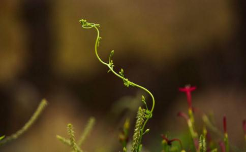

放生文
在我们生活的广大世界中，什么是最可贵的东西呢？您也许会认为是自己的金银财宝或珍贵的物品等等，但我不这么认为。对我来说，自己的生命才是最可贵的，如果我在遭到生命危险时，我愿舍弃自己的一切财产来换取生命的延续。其实每个众生都会象我一样如是地珍惜自己的生命，我等大师——大慈大悲的释迦牟尼佛曾在《龙王请问经》中这样劝告我们：“朋友们！你们千万不要为了自他的生存而去杀害众生的生命！这是因为每个众生都珍视自己的生命。”所以有智慧的朋友们应该为了自他的利益而不要损害任何一个众生的生命。佛陀又在《布施波罗蜜多经》中劝诫道：“生命是最可贵的，甚至连蝼蚁以上的动物都喜爱自己的生命，不愿被杀和随喜被杀，故我也是不愿被杀、教杀和随喜杀。”由此看来，生命是何等的可贵！从生命的价值来看，我们即便是用一万元去救护一条鱼的生命也是值得的。当然，世尊所宣说的八万四千法门，我们修学任何一门，都是非常殊胜的，但是其它法在修学时若是发心不清净或是无记的发心，功德显然不是太大的。而您无论发什么心，哪怕只是救护一个生命，功德也是无量的，因为您直接利益了众生。龙树菩萨在《大智度论》中云：“诸余罪中，杀业最重，诸功德中，放生第一。”我等大师释迦牟尼佛在因地曾多次用自己的血肉来救护其他众生。现在我们作为佛弟子又是如何对待众生的呢？是否在实际行为中学过佛的所行呢？在此，我们应当了知：成佛之根本是菩提心，而菩提心是从饶益有情生起的。为了解除自他轮回的痛苦，我希望各位虔诚的佛弟子多多放生！
人世间最重要的是生命，天底下最残酷的是杀伤。即使是一些低等动物如虱子等遇到逮它，也知道逃避死亡，立刻会躲藏起来。小如蚂蚁，尚且贪生，快要下雨了，赶快迁徙。既如此，为什么偏偏有人在山上张网捕兽，在水中布网捕鱼，千方袭击捕捉，用曲的钩，直的箭，百计搜罗，使这些飞禽走兽游鱼丧魂落胆，母离子散，有的被关在笼子里像囚犯关在监狱里一样，有的被放砧板上用刀剁，像人上刑场被砍杀一样。怜儿的母鹿舔舐着幼鹿的疮伤而柔肠寸断；畏惧死亡的猿猴，望见弓箭而双目流下悲哀的眼泪，倚仗我的强大而欺凌它的弱小，于道义上是讲不过去的。吃他们身上的肉而滋补自己的身体，将于心何忍？
凡是施恩于众生，都有果报。这并非没有根据的话，很多都记载在古书上，使大家心明眼亮，明白佛法真谛。普愿世人随所见之物发慈悲心，在捐助财物上不要吝惜，多行方便，恩泽周济众多的生命，这就是大阴功。如仅仅救助一只小虫子，也并非不是一件善事，如果随着岁月的增长而日积月累，自然做得多了，范围也广了，福德就会更加崇高，慈悲就会充满人间，你的名字将通达到天府，世间的怨气都将扫空，多多的福祉将荟萃于今生，再加以培浇善根，余庆还能延及于来世。尚能进一步助念佛号，加诵经文，为其回向西方极乐世界，使之永离三恶道。愿心愈大，愿力愈坚，所植善根福德就愈深，道业得以速成，往生莲台也当属于上品上生了。
一般而言，在十善业中，每种都有相似和标准两类，相似类是指仅仅舍弃杀生等业；标准类是指不仅舍弃杀生，而且要做保护其它生命等的善业。对此，自己内心可发誓（而做），不一定非要在言语上发誓及在上师和佛像等前许愿，得条件具备时，于上师等面前发誓是有特殊功德的。对于自己拥有家畜，解除它们对死亡的畏惧，乃至于活着期间给予养护，并且在自己力所能及的范围内，让它们自由自在──这是一种放生；若不是自己所拥有的众生，在其即将被杀害时，暂时解除其对死亡的恐惧。妥当地放生——这是另一种放生。这两种放生行为，都是后者即标准类善业。另外，以清净意乐劝阻他人舍弃杀生并行放生；如有权力，可封山封水，保护环境；断除以动物供养布施的坏习俗这些同样是标准类善业，是真实的无畏布施和真实的饶益有情戒，其它的波罗蜜也如应具足了。此之功德，在《正法念处经》中云：“戒律之中往生善趣的殊胜方法，即此布施生命之戒。”依此所说，即是善道善趣世界中获得圆满天人身和人身之因。由此，善根仍然不枯不竭，能成善果。尊者世亲曾说：“杀处所引而放生，如此惠济诸生命，舍弃伤害诸众生，定获长寿之果报。”接此说法，是能圆满获得长寿果报的。不仅如此，慈悲心等自然生起，善神为友，所有动物体认为亲而喜欢等，会得到很多功德。再者众生恭敬，无病无危害，快乐永幸福，生生世世敬信佛陀所行，不离三宝，最终会获得无上菩提之果此在《地藏十轮经》中有所述。此外，为了上师善知识们长久住世，做此善行，会成为上师禳灾祈福和自己延寿的因缘；为了往生极乐世界而行此善，会成为能往生之困缘等，具有无量益处。总而言之，佛陀曾说：“一切有为之善业，放生功德为最大。”